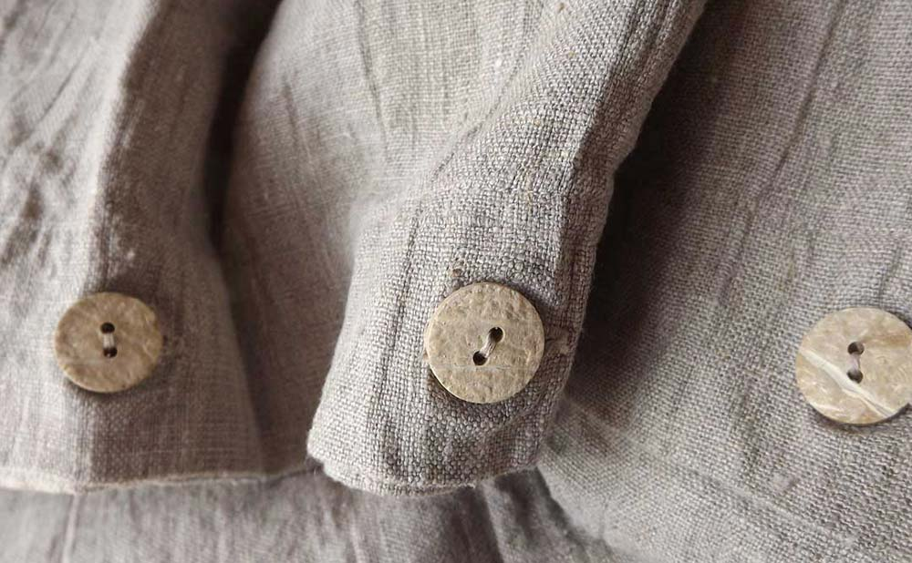

orkney linen

Orkney natural 100% linen is the cornerstone of Rough Linen. It has the traditional texture and color of homespun domestic European linen – I suspect the mill I use has very old looms for I haven't found this exact texture anywhere else. It is my strongest linen, for bedding, tablecloths, napkins, towels, pinafores and curtains.
Also in white, black and charcoal.
My grandmother's original linen pillow slip
Orkney tablecloth


My Orkney natural duvet cover with coconut buttons
Designer Richard Ostell: "In the master bedroom, the floors are bare and the windows are simple white blackout roller blinds. The king—size summer cover in natural Orkney linen is from Rough Linen."